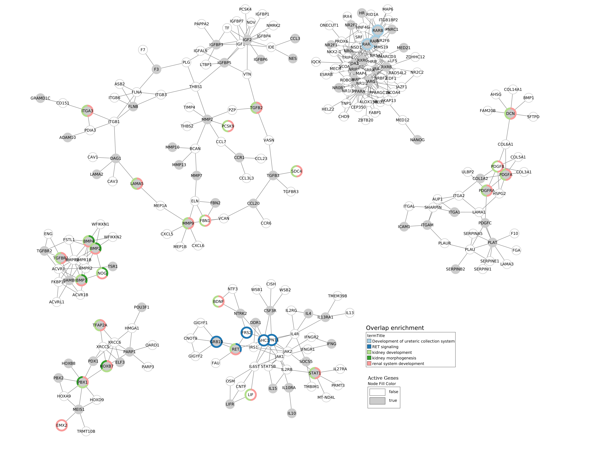

Example 3 : analysis from custom files¶
On the Ozisik’s paper, link between genes targeted by vitamin A and CAKUT disease is analysis. He created a custom target genes list from Balmer and all (mettre la date) et selected pathways related to CAKUT disease from several sources (WP, REACTOME and Biological Process from Gene Ontology).
Here, data source come from custom files : a list a genes targeted by vitamin A and pathways of interest that come from several sources.
Overlap analysis¶
The target genes list is given to --geneList parameter, pathways of interest to --GMT and the list of background
sources is given to --backgroundFile.
Results files are saved into examples/OutputResults_example3/ folder.
python3 main.py overlap --geneList examples/InputData/InputFromPaper/VitA-Balmer2002-Genes.txt \
--GMT examples/InputData/InputFromPaper/PathwaysOfInterest.gmt \
--backgroundFile examples/InputData/InputFromPaper/PathwaysOfInterestBackground.txt \
--outputPath examples/OutputResults_example3/
One file is generated :
Overlap_genesList_withpathOfInterest.csv: results of the overlap analysis between targeted genes and CAKUT pathways
If you want to have more details about theses files go to : BLABLABLA
1 086 genes targeted by vitamin A (from CTD)
13 pathways related to CAKUT diseases from 3 different sources : Biological Process (4), REACTOME (5) and WikiPathways (4)
Results :
9 / 13 pathways overlap significantly target genes
PathwayIDs |
PathwayNames |
pAdjusted |
IntersectionSize |
|---|---|---|---|
renal system development |
3.361e-26 |
76 |
|
kidney development |
3.911e-25 |
73 |
|
kidney morphogenesis |
2.011e-12 |
28 |
|
WP:WP5053 |
Development of ureteric collection system |
1.841e-05 |
16 |
WP:WP4823 |
Genes controlling nephrogenesis |
2.052e-05 |
15 |
PMC5748921-PMC6115658 |
CAKUT causal genes |
2.020e-04 |
10 |
WP:WP5052 |
Nephrogenesis |
2.020e-04 |
8 |
REAC:R-HSA-157118 |
Signaling by NOTCH |
1.124e-03 |
32 |
WP:WP4830 |
GDNF/RET signalling axis |
1.617e-03 |
8 |
Active Module Identification : DOMINO¶
Warning
Results of DOMINO can’t be reproduced when using their server.
The target genes list is given to --geneList parameter, pathways of interest to --GMT and the list of background
sources is given to --backgroundFile.
With this method, we will search active modules (extend our target list to other link genes) using a protein-protein
interaction network (PPI_network_2016.sif). Then, for each active module identified, an overlap analysis will made
against the pathways of interest.
Results files are saved into examples/OutputResults_example3/ folder.
python3 main.py domino --geneList examples/InputData/InputFromPaper/VitA-Balmer2002-Genes.txt \
--GMT examples/InputData/InputFromPaper/PathwaysOfInterest.gmt \
--backgroundFile examples/InputData/InputFromPaper/PathwaysOfInterestBackground.txt \
--networkFile examples/InputData/PPI_network_2016.sif \
--outputPath examples/OutputResults_example3/
Several files are generated :
DOMINO_inputGeneList_genesList.txt: list of genes used for the AM identificationOverlap_AM_*_genesList_withpathOfInterest.csv: results of the overlap analysis between targeted genes and CAKUT pathways. One file for each AM.DOMINO_genesList_activeModulesNetworkMetrics.txt,DOMINO_genesList_activeModulesNetwork.txt,DOMINO_genesList_activeModules.txt,DOMINO_genesList_overlapAMresults4Cytoscape.txtandDOMINO_genesList_signOverlap.txt: some metrics are calculated and saved into files. Theses files are useful for visualisation.
If you want to have more details about theses files go to : BLABLABLA
1 086 genes targeted by vitamin A (from CTD)
13 pathways related to CAKUT diseases from 3 different sources : Biological Process (4), REACTOME (5) and WikiPathways (4)
Results :
20 active modules identified (node numbers between 8 and 68) / 6 with overlaps
1 086 used as active genes (target genes)
5 pathways overlap significantly the 6 AM with enrichment results (3 from BP, 1 from WP and 1 from REACTOME)
termID |
termTitle |
padj |
|---|---|---|
REAC:R-HSA-8853659 |
RET signaling |
4.127e-06 |
kidney morphogenesis |
3.531e-05 |
|
renal system development |
6.396e-05 |
|
kidney development |
6.396e-05 |
|
WP:WP5053 |
Development of ureteric collection system |
3.660e-02 |
Visualisation :
To know how the network was made, go to : BLABLA
Some statistics of each active modules founded : cf. le fichier
AMINumber |
EdgesNumber |
NodesNumber |
ActiveGenesNumber |
|---|---|---|---|
1 |
89 |
68 |
24 |
2 |
245 |
68 |
23 |
3 |
177 |
63 |
19 |
4 |
51 |
32 |
13 |
5 |
29 |
23 |
11 |
6 |
29 |
19 |
10 |
7 |
197 |
62 |
17 |
8 |
69 |
45 |
14 |
9 |
145 |
58 |
16 |
10 |
65 |
41 |
13 |
11 |
39 |
28 |
10 |
12 |
11 |
11 |
6 |
13 |
16 |
11 |
6 |
14 |
49 |
34 |
10 |
15 |
38 |
19 |
7 |
16 |
58 |
38 |
10 |
17 |
55 |
38 |
9 |
18 |
67 |
25 |
7 |
19 |
8 |
8 |
4 |
20 |
18 |
19 |
6 |
Random Walk with Restart : multiXrank¶
First, we built a rare diseases network and the corresponding bipartite. If you want more detailed, go to :
python3 main.py networkCreation --networksPath examples/InputData/multiplex/2/ \
--networksName pathwaysOfInterestNetwork_fromPaper.sif \
--bipartitePath examples/InputData/bipartite/ \
--bipartiteName Bipartite_pathOfInterest_geneSymbols_fromPaper.tsv \
--GMT examples/InputData/InputFromPaper/PathwaysOfInterest.gmt \
--outputPath examples/OutputResults_example3/
Then, we run the random walk with restart analysis. The target genes list is given to --geneList parameter.
MultiXrank needs a configuration file (--configPath) and the networks path (--networksPath). We run with
default parameters.
The target genes are set as seeds for the walk and saved into a file --seedsFile examples/InputData/seeds.txt.
The user has to give the SIF name (--sifFileName) to save the network results and the top number of results too
(--top 10).
Results files are saved into examples/OutputResults_example3/ folder.
For more detail about the structure of the config file etc go to :
python3 main.py multixrank --geneList examples/InputData/InputFromPaper/VitA-Balmer2002-Genes.txt \
--configPath examples/InputData/config_minimal_example3.yml \
--networksPath examples/InputData/ \
--seedsFile examples/InputData/seeds.txt \
--sifFileName example3_resultsNetwork.sif \
--top 10 \
--outputPath examples/OutputResults_example3/
Folder RWR_genesList is created :
config_minimal_example3.ymlandseeds.txt: a copy of the input filesmultiplex_1.tsvandmultiplex_2.tsv: score for each feature. 1 corresponds to the multiplex and 2 to the disease network (depends of the folder name where networks are saved).example3_resultsNetwork.sif: SIF file with the network result
For more detail about the results, go to :
1 086 genes targeted by vitamin A (from CTD)
13 pathways related to CAKUT diseases from 3 different sources : Biological Process (4), REACTOME (5) and WikiPathways (4)
We used the default parameters. 1 005/1 086 genes are in the networks and used for the walk.
Gene with the highest score : EGFR with score = 0.00033619597393799407 (a seed)
6 pathways have a score higher
node |
pathway name |
score |
|---|---|---|
renal system development |
0.001901 |
|
kidney development |
0.001714 |
|
REAC:R-HSA-195721 |
Signaling by WNT |
0.001610 |
REAC:R-HSA-157118 |
Signaling by NOTCH |
0.001404 |
kidney morphogenesis |
0.000436 |
|
REAC:R-HSA-5358351 |
Signaling by Hedgehog |
0.000407 |
Pathway rare diseases identified¶
Using orsum to compare
orsum.py --gmt PathwaysOfInterest.gmt \
--files Overlap_genesList_withpathOfInterest.4Orsum \
DOMINO_genesList_signOverlap.4Orsum \
diseasesResults.4Orsum \
--fileAliases Overlap DOMINO multiXrank \
--outputFolder orsum
Commands¶
1. Create table for overlap analysis
awk -F';' '{if(NR==1){print "PathwayIDs;PathwayNames;pAdjusted;IntersectionSize"}; if($9<=0.05){$9=sprintf("%0.3e", $9); print $1";"$2";"$9";"$6}}' Overlap_genesList_withpathOfInterest.csv > example3_overlap.csv
2. Create table for DOMINO overlap
awk -F"\t" 'BEGIN{print "termID;termTitle;padj"} NR==FNR{a[$1]=$2; next} {$2=sprintf("%.3e", $2);print $1";"a[$1]";"$2}' ../../InputData/InputFromPaper/PathwaysOfInterest.gmt DOMINO_genesList_signOverlap.txt > example3_DOMINOOverlap.csv
3. Create table for multiXrank analysis
awk -F"\t" 'NR==FNR{a[$1]=$2;next} {if($3>=0.00033619597393799407){$3=sprintf("%.6f", $3); print $2"\t"a[$2]"\t"$3}}' ../../../InputData/InputFromPaper/PathwaysOfInterest.gmt multiplex_2.tsv > diseasesResults.txt
4. Create file for cytoscape
awk -F"\t" 'NR==FNR{a[$1]; next} {if($2 in a){print $2"\tTrue"}else{print $2"\tFalse"}}' seeds.txt multiplex_1.tsv > seeds.4Cytoscape
5. Orsum
Link result files
ln -s ../OutputOverlapResults/Overlap_genesList_withpathOfInterest.csv .
ln -s ../OutputDOMINOResults/DOMINO_genesList_signOverlap.txt .
ln -s ../OutputMultiXRankResults/RWR_genesList/diseasesResults.txt .
ln -s ../../InputData/InputFromPaper/PathwaysOfInterest.gmt
Prepare files
awk -F";" '{if(NR>1){if($9<=0.05){print $1}}}' Overlap_genesList_withpathOfInterest.csv > Overlap_genesList_withpathOfInterest.4Orsum
cut -f1 DOMINO_genesList_signOverlap.txt > DOMINO_genesList_signOverlap.4Orsum
cut -f1 diseasesResults.txt |sed '1d' > diseasesResults.4Orsum
Run Orsum
orsum.py --gmt PathwaysOfInterest.gmt --files Overlap_genesList_withpathOfInterest.4Orsum DOMINO_genesList_signOverlap.4Orsum diseasesResults.4Orsum --fileAliases Overlap DOMINO multiXrank --outputFolder orsum